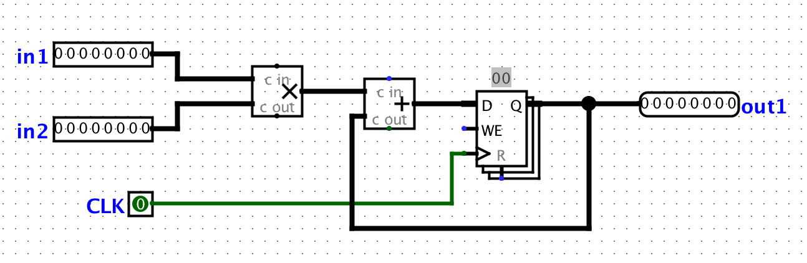

Deadline: Friday, October 16th
Pull the Lab 6 files from the lab starter repository with
git pull starter master
All the work in this lab will be done from the digital logic simulation program Logisim Evolution, which is included in the lab starter files.
IMPORTANT: Please use the .jar file we’ve given you, not the version of Logisim that is downloaded on the lab computers! And a note: Logisim does not save your work as you go along, and it does not automatically create a new .circ file when you open it! Save when you start, and save frequently as you work.
You can open Logism via:
java -jar ../lab05/logisim-evolution.jar
IMPORTANT: Logism is a Java program that requires a GUI, so doing the lab over terminal won’t work (without window forwarding, detailed below). If you wish to work on the lab locally, ensure you have Java installed on your local machine, and pull the latest lab starter files to your local machine. Then, you should be open the program as above. If you wish to run the program over the terminal, you will need to add the -X flag to your SSH command to enable window forwarding (for example, ssh -X [email protected]). On Windows machines, you may need to additionally install Xming. However, we recommend that you do not run logisim over ssh if you are able to run it locally.
For this exercise, we can assume that registers initially carry the value zero. We will be using the lab file exercise1.circ, which should have a subcircuit called non_pipelined which looks something like this:

All this circuit does is take in two inputs, multiply them together, and then add the result to the current state value. For this circuit, let the propagation delay of an adder block be 45ns and the propagation delay of a multiplication block be 60ns. The register has a CLK-to-Q delay of 10ns, setup time of 10ns, and hold time of 5ns. Calculate the maximum clock rate at which this circuit can operate. Assume that both inputs come from clocked registers that receive their data from an outside source.
We want to improve the performance of this circuit and let it operate at a higher clock rate. In order to accomplish this, we want to have two stages in our pipeline: a multiplication stage and an addition stage, in that order.
In order to check that your pipelining still produces correct outputs, we will consider the outputs from the circuit “correct” if and only if it corresponds to the sequence of outputs the non-pipelined version would emit, bar some leadings zeroes. For example, if for some sequence of inputs, the non-pipelined version emits the sequence [3, 5, 1, 2, 4, …]. Then, the correct pipelined circuit might emit the sequence [0, 3, 5, 1, 2, 4, …] for the same sequence of inputs. You can check this by simulating the circuit (using the “Simulate” menu dropdown) and either ticking the clock manually or enabling continuous ticks.
In your exercise1.circ file, the main circuit is set up to produce the output sequence [3, 5, 1, 2, 4, -1, 0, 0, …] from the non-pipelined version of the circuit. The ROM blocks should be initialized to the proper inputs, but if something goes wrong, select the ROM, click on “Contents”, click “Open”, then choose Romdata.
Note that in order to pipeline the circuit, we need a register to hold the intermediate value of the computation between pipeline stages. This is a general theme with pipelines.
As part of the semester, we ask that you provide feedback for how the course is going. While we keep answers anonymous, we require that all students fill out the survey to receive credit for this lab. You can find the survey at: https://docs.google.com/forms/d/e/1FAIpQLSc9Bu1hf1SiLn06qhxLeI0vGuAQpZ4_jFXtWblUlUcBwJCU2A/viewform. All you need to show is the “You’ve already responded” page to receive credit for this portion.
There is no dedicated Lab Autograder assignment for this lab. Here are the checkoff requirements:
Exercise 1:
Exercise 2:
Exercise 3: